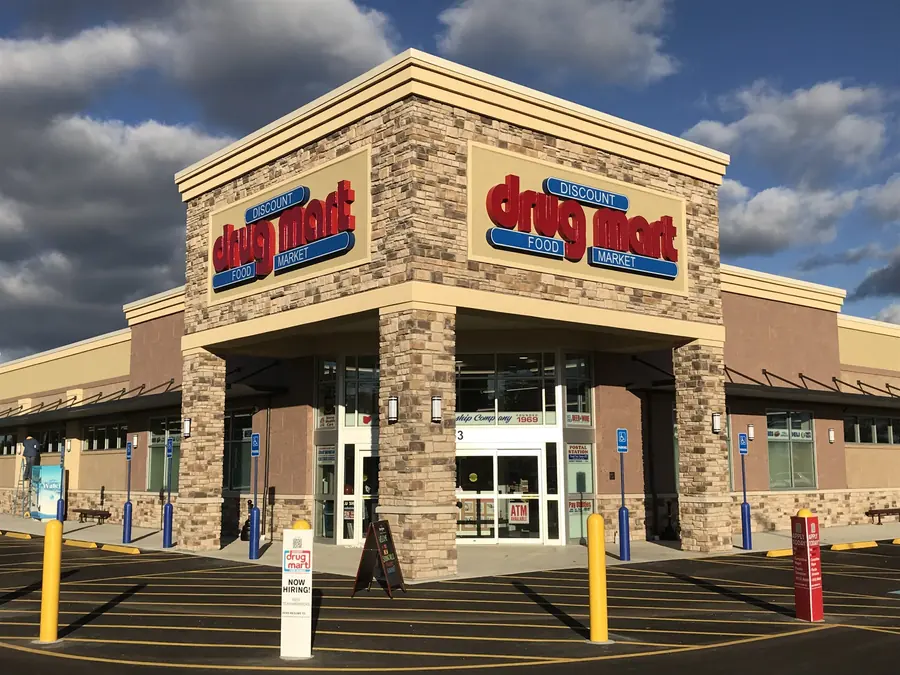

Customers
Purpose-built performance changes what people can see, understand and act on.
Real organizations. Their way of thinking. See how retailers, distributors, bottlers and brands use Salient to move performance forward.
Not only does the solution provide information to make better decisions, the Salient team understand the questions we are asking and why answers to those questions matter to our business.
 Andrea ChaseFareway Meat & Grocery
Andrea ChaseFareway Meat & Grocery
Retail
Discount Drug Mart
A privately owned regional retailer with more than 75 stores across Northeast Ohio, operating as both a full-service pharmacy and a neighborhood department store with more than 40,000 items.
The challenge
Store managers, buyers and category leaders relied on IT to run reports. Simple questions often took days to answer, making it hard to compare stores, evaluate planograms, find out-of-stocks and negotiate confidently with vendors.

The outcome
- Faster responses to store-level issues
- Better planogram and space decisions
- Stronger negotiating leverage with vendors
- More consistent margin management across stores
Grocery
Mother’s Market & Kitchen
A specialty organic grocery and foodservice retailer built on quality.
The challenge
Teams logged into individual POS systems store by store, compiled spreadsheets by hand and waited days, sometimes a full week, for analysis.
“With all nine stores together, I can pull sales information in five minutes.”

The outcome
- Faster access to trustworthy information
- Less manual work and fewer handoffs
- Better questions, asked earlier
- Clear ownership at every level
Consumer packaged goods
Carvel
The category leader in uniquely shaped ice cream cakes, with hundreds of franchised and foodservice locations and thousands of supermarket outlets.
The challenge
Timing, freshness and execution matter as much as demand. Carvel needed a practical, flexible view of store-level performance that reflected how the business actually runs.
“Average Per Outlet became an excellent way for us to tell, on a relative basis, how well a store is doing.”

The outcome
- Performance by region, market, chain, route and product
- Average per outlet as a relative measure of store health
- True demand issues separated from execution gaps
Wholesale and retail
Associated Food Stores
AFS selected Salient to build a data sharing platform for vendor partners, its corporate team and, eventually, its independent grocers.
The challenge
AFS dedicated more resources to shopper data to drive decisions, engage shoppers and improve store profitability across both the wholesale and retail sides of the business.

The outcome
- Co-op, supplier and retail analytics
- Views limited to the right users
- Fast processing at high transaction volumes

Partners who count on Salient to keep performance in motion


Let’s move performance forward, together
Move performance forward with purpose.
Build a culture that supports informed decisions, aligned teams and continual improvement that compounds over time.
Corning, NY 14830 (607) 739-4511